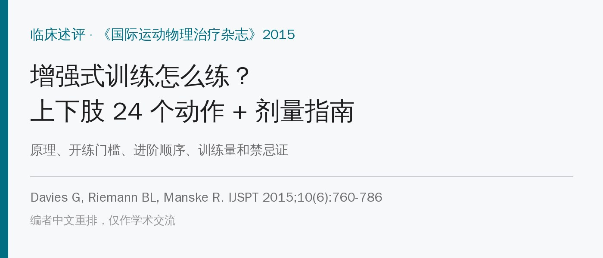
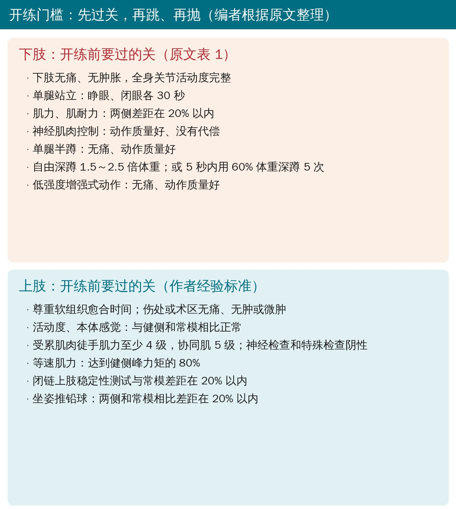
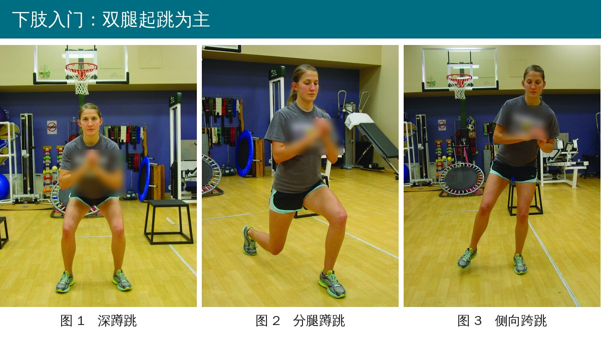
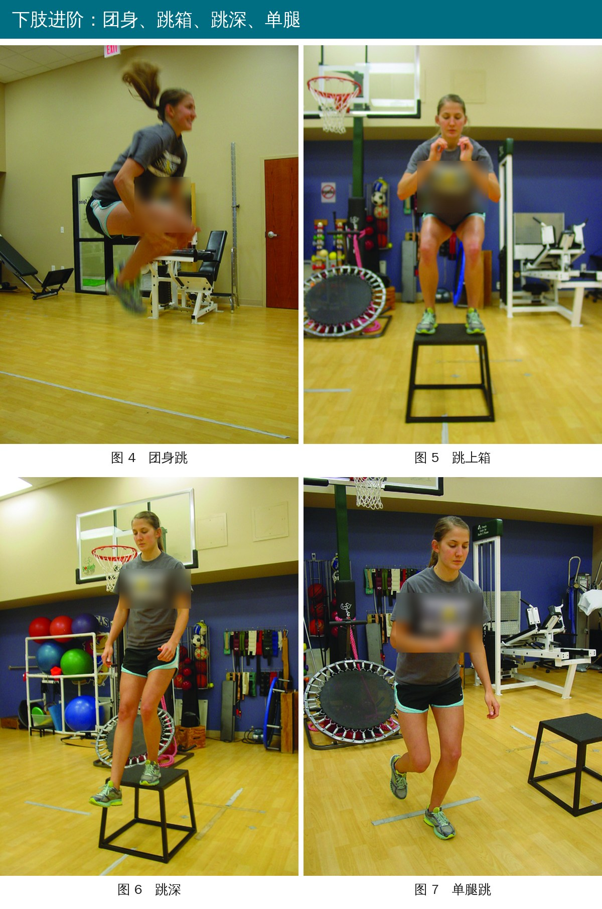
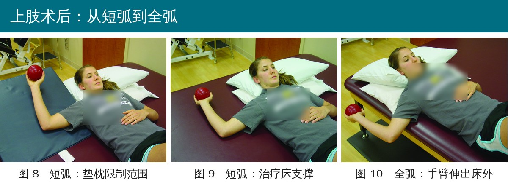
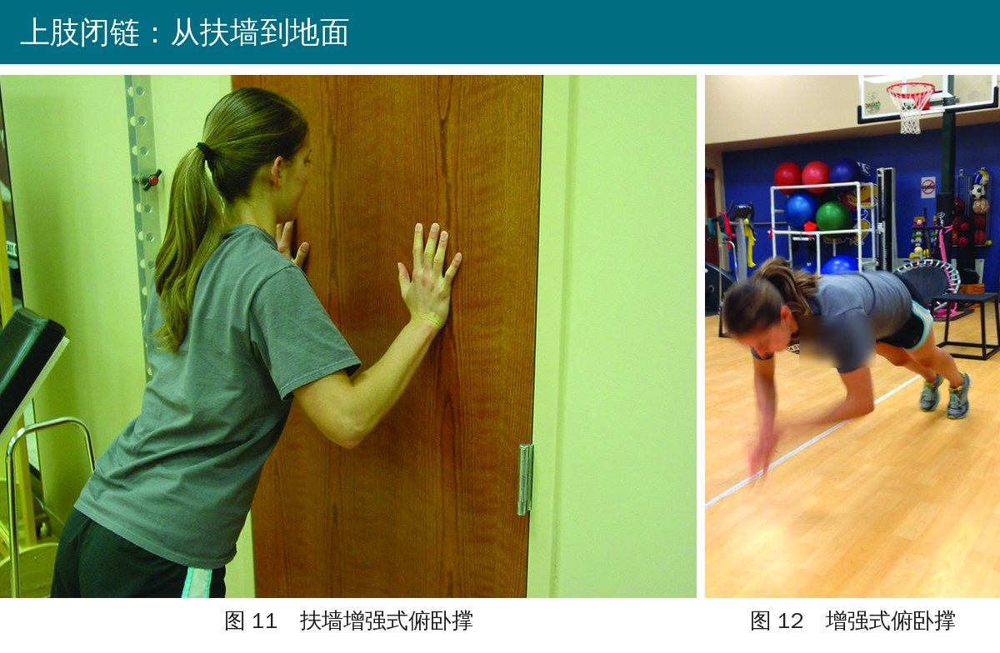
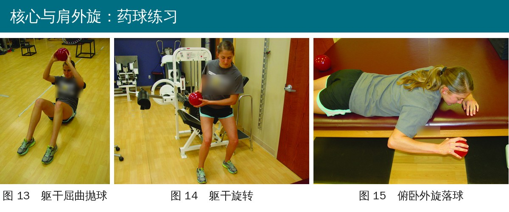
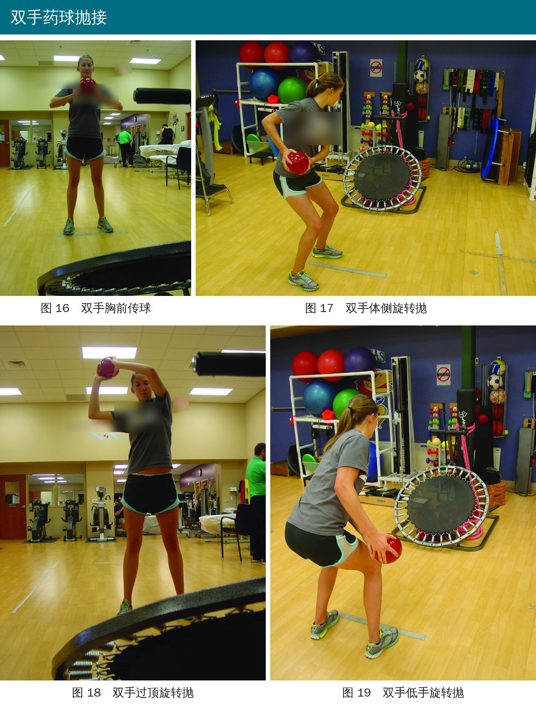
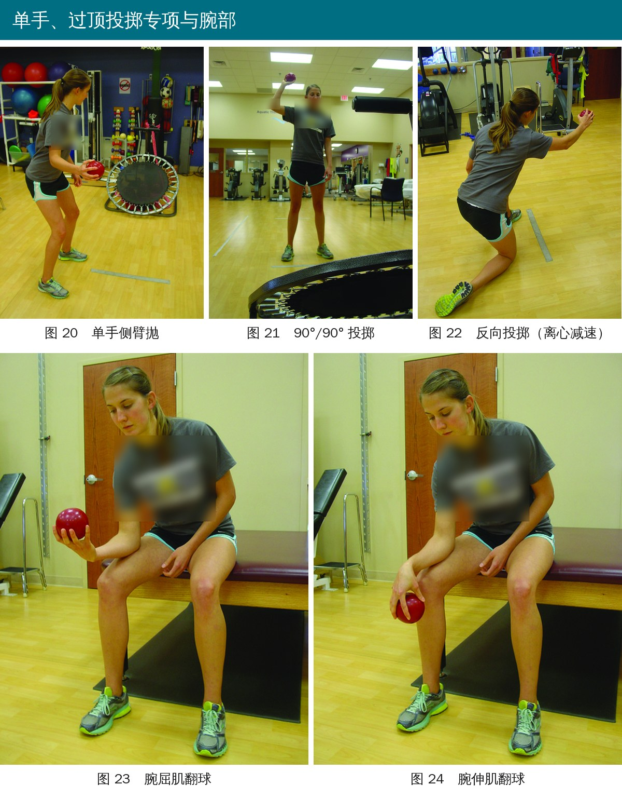

🔖原文信息（编者中文重排）
📚 文献信息
▪ Davies G, Riemann BL, Manske R. Current concepts of plyometric exercise. Int J Sports Phys Ther. 2015;10(6):760-786.
▪ 作者来自美国阿姆斯特朗州立大学、威奇托州立大学
▪ 临床述评（专家意见 + 文献梳理），不是原始研究
跑、跳、变向、投掷，本质上都是“先拉长、马上缩短”：肌肉先被快速拉长（离心），紧接着爆发性收缩（向心），这叫牵张-缩短周期。投球时肩内旋角速度可超过每秒 5000～7000 度，膝关节在跑跳中也有每秒约 1000 度。普通的力量训练练不到这种速度和节奏，所以增强式训练常被称为“力量和重返运动之间缺失的那一环”。
• ① 离心预拉长：肌肉和肌腱被快速拉长，像拉弓蓄能。拉得多大、多快、停多久都会影响储能
• ② 转换期（作者更愿意叫“反弹时间”）：从离心结束到向心开始的那一瞬。越短越好，拖长了能量就以热的形式散掉，牵张反射也用不上
• ③ 向心爆发：把储存的弹性能量和反射一起释放出来
背后的机制有三层：生理上，高强度（80% 以上）才能募集快肌纤维；力学上，肌腱等弹性成分像弹簧储能；神经上，快速拉长刺激肌梭、产生更强的反射性收缩。练习初期（6～8 周）的提升主要来自神经适应，之后才有肌肉肥大。
另外要提前告诉患者：刚开始练会有延迟性肌肉酸痛，属于正常反应，会自行消退；训练有素的人因为“重复训练效应”通常不会明显酸痛。

🔖开练门槛（编者根据原文表 1 和正文整理）
作者认为，最重要的禁忌证是“基础力量不够”。另外疼痛、炎症、急性或亚急性扭伤和拉伤、关节不稳、术后软组织限制也都不能练。下肢还要特别注意软骨、韧带损伤、关节炎、骨挫伤和肌腱损伤：组织没愈合到能承受反复、快速的压力和剪切力之前，不要上增强式。
• 下肢：无痛无肿、关节活动度完整；睁眼、闭眼单腿站立各 30 秒；肌力、肌耐力两侧差距在 20% 以内；单腿半蹲质量好；自由深蹲达到体重的 1.5～2.5 倍，或 5 秒内用 60% 体重深蹲 5 次（Wathen 的标准）
• 上肢：没有公认标准，作者给了自己的经验标准：无痛无肿，活动度和本体感觉正常，受累肌肉徒手肌力 ≥ 4 级、协同肌 5 级，等速肌力达到健侧的 80%，闭链上肢稳定性测试和坐姿推铅球与常模差距在 20% 以内
• 过不了关就继续练技术和力量，晚点再上增强式
不是每个人都需要增强式，只有运动中需要爆发性动作的人才需要。下肢证据比较充分：增强式训练能提高纵跳高度（6～24 周、每周 1～5 次、总共 400～1700 跳），能提高冲刺速度（尤其是起步 10～40 米），还可能帮助预防首次非接触性 ACL 损伤。
• 先试探耐受：向前、向后、向侧方的上下台阶（逐步加高），滑步、交叉步，原地慢跑
• 入门：以双腿为主，如深蹲跳、分腿蹲跳、侧向跨跳、小幅双脚跳、踝关节弹跳
• 中级：跳起摸高、左右跳、前后跳、团身跳、跳上箱、之字跳
• 高级：跳深、单腿跳、单腿团身跳、跳深接跳第二个箱

🔖原文图 1～3：下肢入门动作（衣服上的校名和标识已模糊）

🔖原文图 4～7：下肢进阶动作。跳深（图 6）是从箱上落下后立即起跳，强度很高
• 作者正文：每次训练 50 次触地算少，200 次以上算多，要逐步增加
• 按水平（原文表 4）：初级 80～100 次、中级 100～120 次、高级 120～140 次
• 按强度（原文表 5）：低强度 400、中等 350、高强度 300、极高强度 200 次（这组数字和表 4 对不上，见后文）
• 两次增强式训练之间间隔 48～72 小时；组间也要比普通训练休息更久
技术永远第一：动作一变形就停，不要让错误动作被强化。可以用口头提示、镜子或录像给反馈；一开始做得标准，不代表后面累了还能做得标准，增加量的前提是质量不掉。
上肢的研究远少于下肢，但已有研究显示药球增强式训练能提高投掷速度、网球发球速度和肩内旋爆发力。作者给出的上肢方案分几条线推进：

🔖原文图 8～10：仰卧位肩外旋抛接，从垫枕限制范围的短弧，到手臂伸出床外的全弧
伤后或术后刚开始时，用垫枕或治疗床限制活动范围，在不威胁愈合组织的前提下先练爆发力，再逐步放开到全范围。

🔖原文图 11～12：扶墙增强式俯卧撑 → 地面增强式俯卧撑
• 闭链：扶墙俯卧撑（部分负重）→ 地面增强式俯卧撑 → 落下俯卧撑 → 击掌俯卧撑
• 开链：多关节 → 单关节（有辅助）→ 单关节（无辅助）

🔖原文图 13～15：躯干屈曲抛球、躯干旋转、俯卧外旋落球

🔖原文图 16～19：双手胸前传、体侧旋转抛、过顶旋转抛、低手旋转抛

🔖原文图 20～24：单手侧臂抛、90°/90° 投掷、反向投掷（练离心减速）、腕屈肌和腕伸肌翻球
• 一般顺序：双手胸前传 → 双手过顶足球式掷 → 双手体侧/过顶/低手旋转抛 → 双手过顶上步抛 → 单手侧臂抛
• 投掷专项：90°/90° 投掷（肩外展 90°、外旋 90°）、反向投掷（模拟投球随挥时的离心减速）、腕部翻球
• 扰动训练：从次最大强度、慢速、已知方向、稳定体位，逐步过渡到最大强度、快速、随机方向、不稳定体位
| 参数 | 建议 |
|---|---|
| 每组次数 | 5～10 次 |
| 组数 | 每个动作 1 组（一般运动人群）；3 组（运动员） |
| 频率 | 每周 2 次 |
| 休息 | 动作之间 60 秒；两次训练间隔 48 小时 |
| 强度 | 80%～100% 最大自主收缩（为募集快肌纤维） |
| 周期 | 6～8 周（4 周太短） |
| 动作数 | 至少 6 个不同动作 |
| 类型 | 单关节到多关节；双手到单手 |
| 进阶 | 每周增加 5%～10% |
• 大部分是经验：作者自己也承认，开练标准、参数、动作和进阶原则都没有共识，多数建议是 5 级证据（专家意见）
• 下肢证据主要来自健康运动员：跳高、冲刺的提升研究很多，但对伤后患者“什么时候开始、练多少”几乎没有直接证据
• 上肢证据很少：只有少数小样本训练研究，且结果不一致（有的研究在未训练人群中没有任何改善）
• 门槛偏高：深蹲 1.5～2.5 倍体重对很多康复患者、青少年和女性来说并不现实，也没有研究证明这是必要条件
• 部分机理解释已过时，见下一节
• 正文的图号对不上：正文写“下落跳（图 4）”“团身跳（图 5）”，但图 4 实际是团身跳，图 5 是跳上箱；表 6 里的标注才是对的
• 训练量数字自相矛盾：正文说一次 50 次触地算少、200 次以上算多；表 4 按水平给的是 80～140 次；表 5 按强度给的却是 200～400 次，比表 4 的最高值还多，而且两张表都没写是每次训练还是每周
• 上肢研究数量对不上：正文说上肢只有“5 项干预研究”，紧接着却列举了至少 9 项训练研究
• 转换期 ≠ 电-机械延迟：原文说转换期“也常被称为电-机械延迟期”。电-机械延迟指的是肌肉电信号出现到开始产生力之间的滞后，和离心到向心的转换是两回事
• “增加力量发展时间”：列举增强式训练好处时写的是“increased time for force development”，按上下文应该是缩短发力所需时间
• 肌纤维募集比例重叠：说 IIa 型纤维在 30%～80% 强度被募集，又说 70%～80% 时 IIa、IIb 型被募集，区间重叠；而且人体快肌主要是 IIx 型，IIb 型基本见于动物
• 延迟性肌肉酸痛的说法已过时：原文说离心后“一定会”出现酸痛，原因是羟脯氨酸刺激神经、持续 7～10 天。羟脯氨酸只是胶原分解的标志物，并非疼痛原因；酸痛一般在 24～72 小时达到高峰，多数一周内消退
• ACL 预防的引用错位：说增强式训练可预防首次非接触性 ACL 损伤，引用的是文献 93、16、147；其中 93 是手球运动员体成分和纵跳的研究，16 是增强式动作强度的肌电研究，真正的 Hewett 1999 预防研究是文献 146
• “核心增强式练习见表 3”：表 3 只是一般进阶框架，核心练习实际在图 13～15
• 拼写错误：Amoritization（应为 Amortization）、Baseballl、hydroxypropline，同一作者在相邻两句里一会儿写 Heiderscheit、一会儿写 Heiderscheidt
• 先确认要不要练：只有需要跑、跳、变向、投掷等爆发性动作的人才需要增强式训练
• 先过关：无痛无肿、活动度和平衡达标、两侧力量差距在 20% 以内，再开始
• 从低到高：下肢先双腿、后单腿，先原地、后跳箱和跳深；上肢先短弧、后全弧，先闭链、后开链，先双手、后单手、再专项
• 剂量保守起步：每周 2 次，间隔 48～72 小时，每周增量 5%～10%；记录触地或抛球次数
• 质量优先：追求“触地即起”的短转换时间，动作一变形就停
• 提前告诉患者会有肌肉酸痛，避免把正常反应误当成再次受伤
表 1 增强式训练前的建议测试流程（下肢）
| 测试与方法 | 具体标准 |
|---|---|
| 疼痛 | 下肢无痛 |
| 关节活动度 | 所有关节活动度完整 |
| 肿胀 | 无 |
| 平衡（睁眼） | 30 秒 |
| 平衡（闭眼） | 30 秒 |
| 肌力 | 两侧差距在 20% 以内 |
| 肌耐力 | 两侧差距在 20% 以内 |
| 神经肌肉控制 | 动作质量好，无代偿 |
| 单腿半蹲 | 无痛，动作质量好 |
| 自由深蹲 1.5～2.5 倍体重 | 无痛，动作质量好 |
| 5 秒内用 60% 体重深蹲 5 次 | 无痛，动作质量好 |
| 低强度增强式练习 | 无痛，动作质量好 |
表 2 设计增强式训练进阶时可调整的参数
| 参数 |
|---|
| 次数 |
| 组数 |
| 频率 |
| 组间休息（恢复） |
| 强度（适应期或起始阶段用次最大强度，但最大强度的增强式训练效果最好） |
| 持续时间 |
| 动作模式 |
| 类型 |
| 进阶 |
| 重量 |
| 阻力工具（自重、负重背心、器械等） |
| 患者体位 |
| 动作质量 |
| 参与的身体部位（单关节还是多关节） |
| 疲劳的影响 |
表 3 上、下肢增强式训练的进阶示例
| 阶段 | 内容 |
|---|---|
| 热身 | 全身性热身；针对具体关节的热身 |
| 上/下肢增强式 | 下肢或上肢增强式练习 |
| 躯干（核心）稳定增强式 | 躯干屈伸；躯干侧屈；躯干旋转；躯干 PNF 功能模式 |
| 整体模式增强式 | 专项动作模拟 |
| 跳跃类／肩复合体练习 | 跨跳类／盂肱关节与肩胸关节联合练习 |
| 主要关节的单独增强式 | 例如单腿跳、俯卧落球 |
表 4 按运动水平确定的增强式训练量（触地次数）
| 初级 | 中级 | 高级 |
|---|---|---|
| 80～100 | 100～120 | 120～140 |
数据来源：Chmielewski、Myer、Kauffman、Tillman。
表 5 按练习强度确定的增强式训练量（触地次数）
| 低 | 中 | 高 | 极高 |
|---|---|---|---|
| 400 | 350 | 300 | 200 |
数据来源：Chmielewski、Myer、Kauffman、Tillman。
表 6 下肢增强式练习的进阶示例
| 初级 | 中级 | 高级 |
|---|---|---|
| 深蹲跳（图 1） | 跳起摸高 | 跳深（图 6） |
| 分腿蹲跳（图 2） | 左右跳 | 跳箱 |
| 双脚小跳 | 前后跳 | 单腿跳（图 7） |
| 跳步 | 双腿团身跳（图 4） | 单腿团身跳 |
| 侧向跨跳（图 3） | 屈体跳 | 跳深接跳第二个箱 |
| 踝关节弹跳 | 跳上箱（图 5） | 深蹲式跳深 |
| 滑步 | 之字跳 | |
| 原地跳 | 左右蹬箱跳 | |
| 单腿蹬箱跳 | ||
| 从箱上迈下 |
表 7 伤后或术后开始增强式训练时的活动范围进阶
| 进阶 |
|---|
| 有限范围（短弧）：用垫枕（图 8） |
| 有限范围（短弧）：以治疗床为支撑（图 9） |
| 全范围（全弧）：手臂伸出床外（图 10） |
表 8 上肢增强式练习从闭链到开链的进阶示例
| 进阶 |
|---|
| 闭链：扶墙增强式俯卧撑（图 11） |
| 闭链：增强式俯卧撑（图 12） |
| 开链：多关节 |
| 开链：单关节，有辅助（肩部辅助架） |
| 开链：单关节，无辅助 |
表 9 扰动训练指南
| 起始阶段 | 进阶阶段 |
|---|---|
| 次最大强度 | 最大强度 |
| 慢速动作 | 快速动作 |
| 已知的动作模式（让患者预先收紧肌肉） | 随机的动作模式（让患者对外加负荷做出反应，模拟功能活动） |
| 稳定体位（受保护或受限的活动范围） | 不稳定体位（风险更高的位置） |
表 10 用于过顶运动员肩复合体康复或训练的一般增强式练习
| 练习 |
|---|
| 双手胸前传球（图 16） |
| 双手过顶足球式掷球 |
| 双手体侧旋转抛（图 17） |
| 双手过顶旋转抛（图 18） |
| 双手低手旋转抛（图 19） |
| 双手过顶上步抛 |
| 单手侧臂抛（图 20） |
| 离心减速后接躯干旋转和向心抛球 |
| 本体感觉神经肌肉促进（PNF）模式 |
| 90°/90° 棒球投掷（盂肱关节外展 90°、外旋 90°）（图 21） |
| 单手离心减速随挥动作（即反向投掷）（图 22） |
| 离心减速/向心“翻球”练习（图 23、24） |
其中多数练习在文中图片里有示范。
表 11 过顶运动员专项增强式投掷动作
| 动作 |
|---|
| 结合投掷的全身动作模式 |
| 双手（如胸前抛） |
| 单手离心减速随挥动作（即反向投掷）（图 22） |
| 与运动专项一致 |
表 12 上肢增强式训练的剂量指南
见正文“上肢剂量”一节，已完整译出。
表 13 核心稳定与上肢增强式练习的进阶示例
| 初级 | 中级 | 高级 |
|---|---|---|
| 双手对墙拍球 | ||
| 半转体 | ||
| 全转体 | ||
| 药球抛掷 | 药球抛掷（增加重量、频率、强度） | 药球抛掷（增加重量、频率、强度） |
| 弹力带练习 | 弹力带练习，在有肩部辅助架支撑的体位上叠加等长保持和扰动训练 | 弹力带练习，在无肩部辅助架支撑的体位上叠加等长保持和扰动训练 |
| 节律性稳定（扰动训练） | 节律性稳定（增加一个变量来提高难度） | 节律性稳定（增加一个变量来提高难度） |
| 对墙击掌俯卧撑 | 四点跪位击掌俯卧撑 | 标准俯卧撑位击掌俯卧撑 |
| 双手在 2 个增强式球上反弹 | ||
| 单手在 1 个增强式球上反弹 | ||
| 离心落下俯卧撑 | 离心落下/反弹俯卧撑 | |
| 单手俯卧撑 | ||
| 其他进阶练习：单手扶墙俯卧撑、增强式跳箱、弹力带和 PNF 模式、惯性冲击训练器 |
欢迎关注悦美力公众号，获取更多物理治疗的专业知识！
📄参考文献：
Davies G, Riemann BL, Manske R. Current concepts of plyometric exercise. Int J Sports Phys Ther. 2015;10(6):760-786.
原文 PDF 未标注开放许可协议。本文为学术交流用的中文解读：动作照片引自原文图 1～24（衣服上的校名标识、墙上英文标牌和器械品牌已模糊，标注改为中文），开练门槛卡为编者整理绘制，表格为编者翻译。版权归原作者与期刊，如有侵权请联系删除。